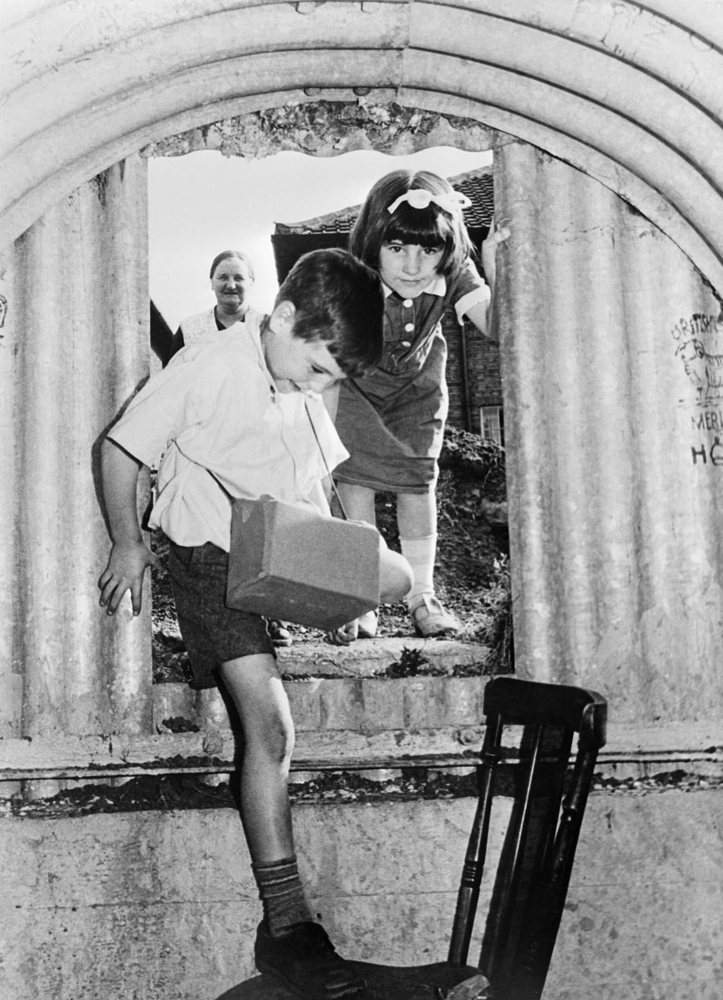

✂ Cut along dashed line to stick neatly into exercise book
KS2 HISTORYKS2 WORLD WAR II • LESSON 06 OF 11
Name:
Date:
The Blitz & Air Raids (1940–1941)
Enquiry Question: How did British families keep safe when bombs fell during the Blitz?
LESSON 06 OF 11 • KS2

Source A (Photograph): A British family outside their corrugated steel Anderson shelter covered in garden soil.
Historical Background • Read Together
From 7 September 1940 until May 1941, German aircraft launched the Blitz (from Blitzkrieg, meaning "lightning war"). London was bombed for 57 nights in a row, alongside major port and factory cities including Coventry, Liverpool, Birmingham, Plymouth, Glasgow (Clydebank), Hull, and Belfast.
Families sheltered in garden Anderson shelters covered with 15 inches of earth, indoor steel Morrison table cages, or deep London Underground platforms.
Task 1: Shelter Detective • Gardens and Underground PlatformsPrimary Evidence
Source B (Photograph, 1940): Families sleeping with blankets on a deep London Underground station platform during a night raid.
1. Compare Sources A and B. How did corrugated steel Anderson shelters and deep Underground platforms protect people from bomb blasts?
2. Why couldn’t every city family build an Anderson shelter, and how did families keep spirits up during noisy nights underground?
Task 2: A Night in the Blitz • Dusk to DawnChronology
STAGE 1 • SEPTEMBER 1940
Black Saturday & 57 Nights of Bombing
From "Black Saturday" (7 Sept 1940), Luftwaffe bombers raid London for 57 nights and hit ports and factories from Coventry to Clydebank.
Why did Hitler launch The Blitz against London and UK cities in 1940?
STAGE 2 • 1939–1940
Anderson & Morrison Shelters at Home
Families bury corrugated steel Anderson shelters under 15 inches of garden soil, or sleep inside steel-mesh Morrison table cages.
How did Anderson and Morrison shelters protect families during raids?
STAGE 3 • WINTER 1940–1941
Tube Station Platforms & Rooftop Volunteers
Up to 177,000 Londoners shelter on deep Underground platforms while ARP wardens and firefighters battle blazes above.
How did families shelter in London Tube stations while teams fought fires?
✂ Cut along dashed line to stick neatly into exercise book
KS2 ENQUIRYAnderson & Morrison Shelters, Underground Stations & Fire Watchers
Name:
LESSON 06 • Sheet 2 of 2
Task 3: Shelter Engineering & Night Raid Survival KitVisual Investigation
Why was piling thick earth on top of an Anderson shelter so effective?
2. Indoor Steel Morrison Table Shelter (1941)
How did a Morrison shelter protect a family if upstairs floors collapsed?
3. Warm Blankets, Flask of Hot Tea & Biscuits
Why were garden shelters cold and damp during winter nights?
4. Torch, First-Aid Tin & Card Games / Knitting
Why did parents pack quiet games and singing books for children?
Task 4: Thinking Heads • Two Historical ViewpointsPerspectives
1Child Inside a Damp Garden Anderson Shelter
What can you hear and feel under your blankets during a night raid, and how does singing with your family help?
2Auxiliary Firefighter / Fire Watcher Above Ground
What dangers do you face in the dark street pumping water onto incendiary fires while others shelter?
Task 5: Historian Mission Challenge • Answering the EnquiryExtended Writing
Enquiry Answer: How did British families keep safe when bombs fell during the Blitz?
Starter:"During the Blitz of 1940–1941, ordinary British families and emergency volunteers protected their communities through..." • Word Bank: wailing siren • Anderson and Morrison shelters • ARP wardens • Auxiliary Firefighters